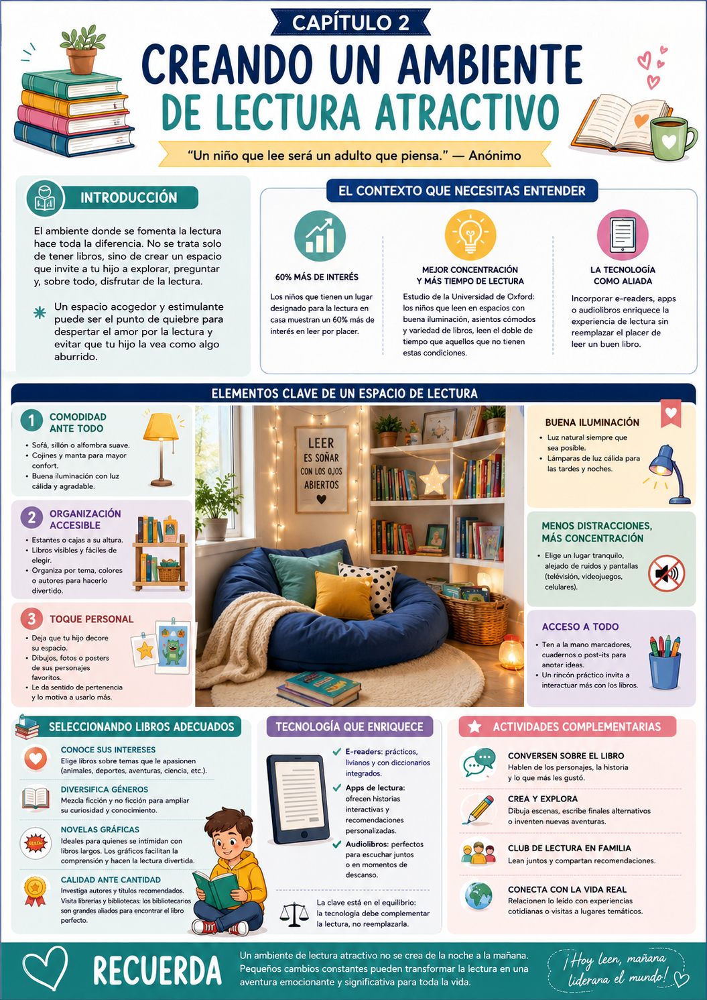

¿Tu hijo llega a casa con ganas de leer pero termina viendo la tele? Muchas veces el problema no es la motivación — es el ambiente. El espacio donde se fomenta la lectura puede hacer toda la diferencia.
No se trata solo de tener libros. Se trata de crear un rincón que invite a tu hijo a explorar, a sentarse, a quedarse. Un lugar que él sienta como suyo.
¿Por qué importa tanto el ambiente?
Los chicos que tienen un lugar designado para leer en casa muestran mucho más interés en leer por placer. Un entorno cómodo y estimulante actúa como catalizador — reduce la resistencia y aumenta el tiempo que el nene dedica a los libros.
✅ Antes de arrancar este capítulo

Tuki te dice:
Un ambiente de lectura atractivo no se crea de la noche a la mañana. Pequeños cambios constantes pueden transformar la lectura en una aventura emocionante.
Un buen rincón de lectura no necesita ser perfecto ni costoso. Necesita tres cosas fundamentales: comodidad, organización y un toque personal. Con eso alcanza para que tu hijo quiera volver ahí.
Comodidad ante todo
Sillón, cojines, manta suave. Buena iluminación con luz cálida. El cuerpo cómodo = mente abierta a leer.
Organización accesible
Libros a su altura, visibles y fáciles de elegir. Organizados por tema o colores para que sea divertido elegir.
Toque personal
Dejá que tu hijo decore su espacio con dibujos, fotos o posters de sus personajes favoritos. Que sienta que es suyo.
Lo que dice la investigación
Un estudio de la Universidad de Oxford encontró que los chicos que leen en espacios con buena iluminación, asientos cómodos y variedad de libros tienden a leer durante el doble de tiempo que los que no tienen esas condiciones. No es un detalle menor — es el doble.
Un rincón de lectura que incorpora distintos materiales capta la atención de manera mucho más efectiva que solo un par de libros parados en una repisa.
Variedad de materiales
Cuentos, enciclopedias, cómics y revistas. Cada formato invita a un tipo diferente de lectura.
Elementos interactivos
Juegos de palabras o puzzles relacionados con los libros que está leyendo. Conecta el juego con la lectura.
Rotación de materiales
Cambiá libros y materiales cada dos semanas. La novedad genera anticipación y ganas de volver.
¿Qué libros poner en el rincón?
Criterios para elegir bien · Sin desperdiciar plata
- 1Seguí sus intereses: si le gustan los animales, la ciencia o el fútbol — buscá libros de esos temas. El interés es el motor.
- 2Mezclá géneros: ficción y no ficción pueden convivir. Las novelas gráficas son excelentes para chicos que se intimidan con libros de mucho texto.
- 3Calidad sobre cantidad: 10 libros bien elegidos valen más que 50 que no le interesan.
- 4Rotá los libros: cambiá los que están a la vista cada dos o tres semanas para mantener la novedad.
La tecnología como aliada
Equilibrio digital y físico · Sin reemplazar el libro
La tecnología puede enriquecer la experiencia de lectura — siempre que no la reemplace. La clave está en el equilibrio.
- 1E-readers y apps de lectura son válidos, especialmente para los chicos más tecnológicos.
- 2Audiolibros funcionan muy bien para chicos auditivos o para los momentos en que no quieren leer solos.
- 3Establecé momentos específicos para cada formato — el libro físico tiene su propio ritual y eso vale.
La clave del equilibrio
La tecnología debe complementar la lectura, no reemplazarla. Si tu hijo escucha un audiolibro hoy, mañana puede leer el mismo libro en papel — compara las experiencias juntos.
Ya sabés qué elementos necesita el rincón. Ahora veamos cómo implementarlo paso a paso y qué actividades concretas podés hacer para que la lectura en ese espacio se convierta en un hábito.
Creá el rincón con tu hijo
Participación activa · Sentido de pertenencia
Un espacio que él ayudó a crear es un espacio que va a querer usar. No lo armes solo y se lo mostrés — hacélo junto a él.
- 1Elegí juntos el lugar: ¿un rincón de su cuarto, la sala, el pasillo? Que él decida.
- 2Dejalo decorar: dibujos suyos, fotos, personajes favoritos, stickers. Sin limite de creatividad.
- 3Que él organice los libros como quiera — por color, por tamaño, por tema. Lo que le guste.
- 4Añadí elementos de confort: una mantita, una lámpara especial, su taza o vaso favorito para tener cerca.
La hora mágica de lectura
Rutina diaria · 20-30 minutos
El rincón solo funciona si hay un momento fijo para usarlo. Sin rutina, el espacio más lindo del mundo pierde efecto.
- 1Elegí el momento del día donde tu hijo esté más receptivo: después del almuerzo, antes de dormir, al volver del colegio.
- 2Empezá con 15-20 minutos y aumentá gradualmente.
- 3Leé con él — no lo dejés solo. La lectura compartida en el rincón crea el hábito mucho más rápido.
- 4Al terminar, preguntale qué fue lo que más le gustó. Ese intercambio hace que quiera volver.
Tip de rutina
Mantené una variedad de libros en el rincón para que la curiosidad de tu hijo se despierte cada día. Cambiá los que están a la vista cada dos semanas.
Caza de libros temática
Actividad especial · Una vez por mes
Una vez por mes, hacé una "caza de libros" en casa o en la biblioteca. Creá una lista de categorías (aventura, animales, humor, ciencia) y que tu hijo encuentre un libro de cada una.
- 1Definí juntos 3-4 categorías para el mes.
- 2Salgan a buscar libros — biblioteca, librería o incluso entre los que ya tienen en casa.
- 3Cada libro encontrado va al rincón con un lugar de honor.
- 1No personalizar el espacio — si no refleja los gustos de tu hijo, no va a querer usarlo.
- 2Sobrecargar el rincón con demasiados libros o decoraciones que distraigan.
- 3No establecer un horario fijo — sin rutina, el rincón queda abandonado.
- 4Elegir todos los libros vos — involucrar a tu hijo en la selección es clave para que lea.
- 5Ver la tecnología como enemiga — usada bien, puede ser una gran aliada del hábito lector.
Tuki te dice:
¡Muy bien! Ya tenés todo para crear el rincón lector perfecto. Mirá el resumen visual y después pasamos al Cap 3 donde vemos los métodos más divertidos para leer.
Dos ejercicios concretos para arrancar esta semana. El primero lo hacés una vez, el segundo se convierte en rutina.
Creando tu Rincón de Lectura
Ejercicio único · 45 minutos · Con tu hijo
Este ejercicio se hace una sola vez — y define todo lo demás. El objetivo es crear un espacio que tu hijo sienta como propio.
- 1Elegí juntos un rincón tranquilo y bien iluminado. Puede ser su cuarto, la sala o un pasillo. Que él decida.
- 2Agregá un sillón o cojines grandes donde pueda sentarse cómodo. Si hay una mesita cerca, mejor.
- 3Organizá los libros en una estantería o caja a su altura — que pueda ver las tapas y elegir sin ayuda.
- 4Decorá juntos: posters de personajes favoritos, dibujos suyos, una lámpara especial, una planta. Todo suma.
Resultado esperado: Un espacio acogedor que invite a tu hijo a explorar los libros y querer quedarse ahí.
La Hora de Lectura Familiar
Hábito diario · 30 minutos · Juntos
Una vez que el rincón existe, necesita un momento fijo para usarlo. Este ejercicio convierte el espacio en un hábito real.
- 1Definí un momento del día donde ambos estén disponibles y tranquilos: antes de dormir, después de la cena, al volver del colegio.
- 2Que tu hijo elija el libro — siempre. Eso le da propiedad sobre la experiencia.
- 3Leé con él en voz alta, turnándose. La lectura compartida crea el hábito mucho más rápido que leer solo.
- 4Al terminar, preguntale qué fue lo que más le gustó. Ese intercambio es lo que hace que quiera volver mañana.
Resultado esperado: Tu hijo va a asociar la lectura con momentos de conexión y disfrute, no con obligación.
- 1No personalizar el espacio. Si no refleja los gustos de tu hijo, no va a querer usarlo. El sello personal es lo que genera pertenencia.
- 2Sobrecargar el rincón. Demasiados libros o decoraciones que compiten entre sí generan distracción. Menos es más — rotá en vez de acumular.
- 3No tener un horario fijo. Sin rutina, el rincón más lindo del mundo queda abandonado. La consistencia es lo que convierte un espacio en un hábito.
- 4Elegir todos los libros vos. Involucrar a tu hijo en la selección es clave. Si él eligió el libro, tiene muchas más ganas de leerlo.
- 5Ver la tecnología como enemiga. Usada con criterio, puede ser una gran aliada. Un audiolibro hoy puede llevar al libro físico mañana.
Tuki te dice:
¡Muy bien! Ya tenés todo para crear el rincón lector perfecto. Mirá el resumen visual y después pasamos al Cap 3.
Esta infografía resume todo lo que vimos en el capítulo. Guardala o compartila — es tu guía rápida para crear el ambiente de lectura ideal para tu hijo.

Infografía · Capítulo 2 — Creando un Ambiente de Lectura Atractivo
Tuki te dice:
¡Terminaste el Capítulo 2! Ya tenés el espacio listo. En el Cap 3 vemos los métodos más divertidos para que la lectura sea un juego, no una obligación.